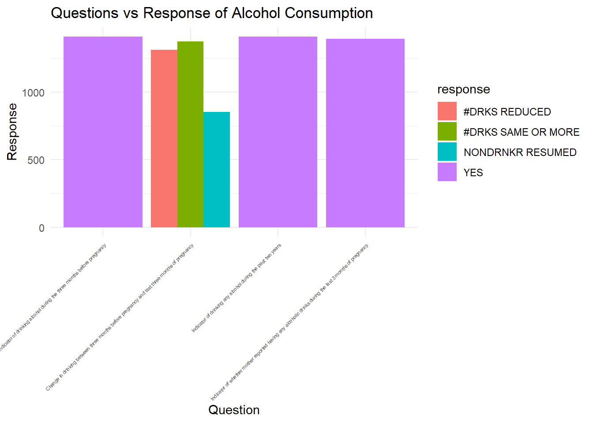

Both substance abuse and maternal/infant mortality run rampant in the United States, and with the the use of the CDC 2007 PRAM Data set, we are interested in looking at the relationships between these variables.
We loaded in data from the PRAMS 2007 dataset. This dataset provided information about many different aspects about maternal health and birth that we were interested in addressing.
After loading in the data, we cleaned each dataset by removing unecessary columns. We then filtered the responses to tailor the dataframe to each dataset, such as removing “no” responses to if mothers were smoking during conception to create a dataset displaying data for mothers who were smoking during conception.
We used the seperate function for the “geolocation” variable by splitting it into a longitude and latitude variable that was used in creating our leaflet plots.
Is there a significant relationship between infant mortality rate and the consumption of Alcohol and Tobacco consumption?
Upon reviewing reviewing the 2007 CDC PRAM data set, and thoroughly understanding the data, we picked our variables of interest that we wanted to test. The data provides robust information on several important factors related to maternal and infant health outcomes.
Other parts of the data that interested us was also the use of contraception in the sample demographic.
We are interested in looking at how pregnancy outcomes changes among mothers who drank or smoked cigarettes before conception, and comparing it to mothers who did not abuse any substances. As a group, we were collectively interested in both Maternal Child Health and Substance Abuse and this was an ideal way to combine those two interests. The demographics, social dynamics, and healthcare system in the United States provide a unique perspective on the outcomes of maternal health and substance abuse. We are interested in learning more about the relationship between substance abuse and infant mortality rates.
infant_deaths <- cleaned_infant_mortality %>%
filter(question == "Indicator of infant currently alive" & response == "NO") %>%
group_by(location_desc) %>%
summarize(total_infant_deaths = n())
# Display the table using knitr::kable()
knitr::kable(infant_deaths)| location_desc | total_infant_deaths |
|---|---|
| Alaska | 45 |
| Arkansas | 45 |
| Colorado | 47 |
| Delaware | 40 |
| Georgia | 43 |
| Hawaii | 45 |
| Illinois | 47 |
| Maine | 42 |
| Maryland | 45 |
| Massachusetts | 44 |
| Michigan | 43 |
| Minnesota | 41 |
| Missouri | 42 |
| Nebraska | 45 |
| New Jersey | 39 |
| New York (excluding NYC) | 47 |
| New York City | 47 |
| North Carolina | 47 |
| Ohio | 46 |
| Oklahoma | 47 |
| Oregon | 46 |
| Pennsylvania | 3 |
| Rhode Island | 46 |
| South Carolina | 47 |
| South Dakota | 43 |
| Utah | 47 |
| Vermont | 47 |
| Washington | 43 |
| West Virginia | 47 |
| Wisconsin | 40 |
| Wyoming | 43 |
The presented table summarizes total infant deaths by state, where each row represents a distinct geographical location. The ‘location_desc’ column specifies the state, while the ‘total_infant_deaths’ column reveals the corresponding count of infant deaths in each location. The data indicates variations in infant mortality rates across regions, with some areas reporting higher or lower rates than others. Notably, states like Pennsylvania exhibit lower counts of infant deaths, whereas Alaska and Arkansas show higher counts. Nevertheless, a majority of the data falls within the 35 to 50 range. This summary offers a comprehensive overview of the distribution of infant deaths across diverse geographical locations.
# Plot of question and responses for alcohol
Maternal_alc_use <- cleaned_alc_2007 |>
ggplot(aes(x = question, fill = response)) +
geom_bar(position = "dodge") +
labs(title = "Questions and Responses", x = "Questions", y = "Count") +
theme_minimal() +
theme(axis.text.x = element_text(angle = 45, hjust = 1, size = 4))+
labs(
x = "Question",
y = "Response",
title = "Questions vs Response of Alcohol Consumption"
)
print(Maternal_alc_use)
the Maternal_alc_use plot shows the responses to the
questions asked. From this plot, we can see that from the 3 months
before pregnancy and the last 3 months of pregnancy, about 1300 monthers
continued drinking the same or more amount of alcohol, 1200 reduced how
much they consumed alcohol, and about 700 nondrinkers resumed drinking.
It is obvious that more mothers continued drinking the same amount or
more alcohol than reducing how much they consumed.